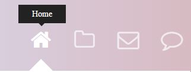
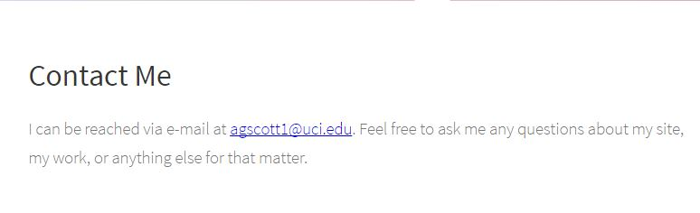
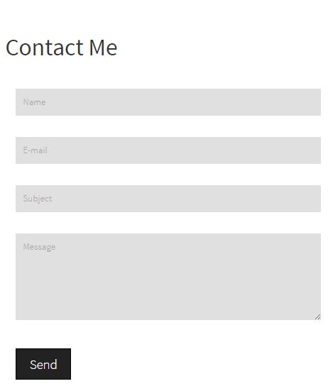

User Interviews
User interviews are important because they give us an insight into
who that user is, and why they would want to or not want to use a service.
I asked two types of questions. The first set was about the user, including
who they are and what their goals are. And the second type of question I asked
was about the general idea of a personal portfolio site, and what kinds of things
they would like to see or not see on that site.
View the user interviews
Competitor Analysis
A competitor analysis is an evaluation of competitor's products, including
what they are doing right, what they are doing wrong, and how they get there.
The sites I chose to evaluate were mainly computer science and
math related portfolios. I evaluated them because I wanted to make a site
with similar content eventually.
View the competitor analysis
Feature Value Matrix
A feature value matrix is a matrix that is used to organize features
based on their business value, user value and technical effort. Features with
low total scores have high priority while features with high total scores have
low priority. For the feature value matrix, I focused on
site usability via improved navigation and better mobile support, contact by
form to make contacting me easier, and improving my portfolio section to
accurately show projects I've worked on.
View the feature value matrix
Feature Prioritization
I prioritized fixing navigation issues and adding increased mobile support before
prioritizing other issues like updating my portfolio, adding support for older
browsers, and adding a contact by form instead of the original email link. By fixing
the navigation and mobile issues first, I was able to build a stable interface
that I could depend and build upon.
View the feature prioritization
User Stories
Coming up with user stories is extremely important. When creating them I
thought about different types of users: programmers, HR people scanning the
site after learning about it through my resume, and user's accessing the site
via mobile device. Using these types of users I wanted to focus on how the user
would navigate through my site, how the content would look like on all devices,
and how they would interpret the different sections on my site.
View the user stories
Cognitive Walkthrough
A cognitive walkthrough is where one or more evaluators works through a
series of tasks and asks a set of questions from the perspective of the user.
This allows us to gain insight into how a user completes a certain task.
The problem with some of the cognitive walkthroughs I did was that a lot
of my questions received one word, obvious answers. It was hard to get useful
information without asking the right types of questions.
View the cognitive walkthroughs
User Test
The types of tests I chose to conduct were click tests and five
second tests. I chose to use click tests to see if user's could figure
out the navigation menu without text hints. I chose to use a five second test
to see if the user could remember key content on the page. This five second
test showed me if the fonts and colors I chose for the site were nice to look at
and not too distracting. Turns out, almost every one of the users who took the
tests were able to pass.
View the first user test result
View the second user test result
View the third user test result
All of the user tests, walkthroughs, and general studying of competition
gave me a few areas to focus on and fix that would both improve the user experience
and would help people get a better idea of who I was and what I had
done. These areas were navigation, compatibility, and content.
Navigation was an issue that I felt could be fixed quite easily. I initially thought
that the navigation didn't need any text or explanations, and therefore chose to opt
to use recognizable icons as the buttons to navigate through the site. Unfortunately,
this lead to some ambiguity about what a button actually did or didn't do. This became
apparent in the user click tests, which showed that some people really didn't know where
the portfolio was initially. I didn't want this to be an issue in case someone who wanted
to hire me was put-off by the navigation.
Compatibility was the second issue I found out about. Trying to make my site viewable
through Internet Explorer, and through tablets and mobile sites is challenging due to
the sheer amount of fine tuning that needs to be done for each specific browser. The
main issue I had was that a user on a screen reader couldn't actually see images for
navigation, and thus it would be impossible to actually jump to parts of my site. A
solution for this issue was to include text that could be seen when the navigation is
hovered on.
Content was the third issue I wanted to focus on. My portfolio isn't an actual portfolio
right now since it only says that I completed code academy. I learned that this placeholder
technique doesn't work out well and that I need to update my portfolio immediately. I also
learned through the competitive analysis and through interviews that a blog is an important
aspect of a personal portfolio. By posting about programming topics I've learned about or
personal stories relating to programming, I can make my site more interesting and useful
to anyone, instead of a select group of people.
Incorporation of Findings
I was able to incorporate some of my findings for the final site, but some others had
to be put off due to a lack of time. First, I wasn't able to incorporate a blog mainly
because that takes time and a blog plugin (like Wordpress). Creating my own would be
difficult, and could get messy quickly. I also wasn't able to update my portfolio in time.
This was because most of my projects are executables or web app projects. I didn't have time
to set up an Amazon AWS instance to actually run the databases, connections, and other related
server items to make my projects work online. I was able to get some things to work, however.
The first issue I fixed was the navigation. To do this correctly, I had to move everything
down so that I had enough space for the pop-up text over the navigation icons. To do this,
I set the CSS of the wrapper for the site to have padding at the top. Then, I created a span
attribute with an opacity of zero and a negative margin (to push it above the icon). I also
created a box with a background for the text to sit on. When the user hovers over an icon, the
span element's opacity is set to one, making the content visible. The picture on the left shows
the navigation before (without any helpful text) and the picture on the right shows the new and
improved navigation menu.
Old version of the navigation system

New version of the navigation system
The second issue I fixed was the contact form. I was only able to half complete this part however,
as I wasn't sure if I was allowed to use PHP. For the time being I created a simple form that
has an action set to my e-mail address. In future versions of the site, I would tie the action
to a PHP script that would send me the corresponding e-mail after it is parsed out of the form.
Below are two pictures of the contact system. The first one is the old version while the second
picture is the new contact system.

Old version of the contact system

New version of the contact system